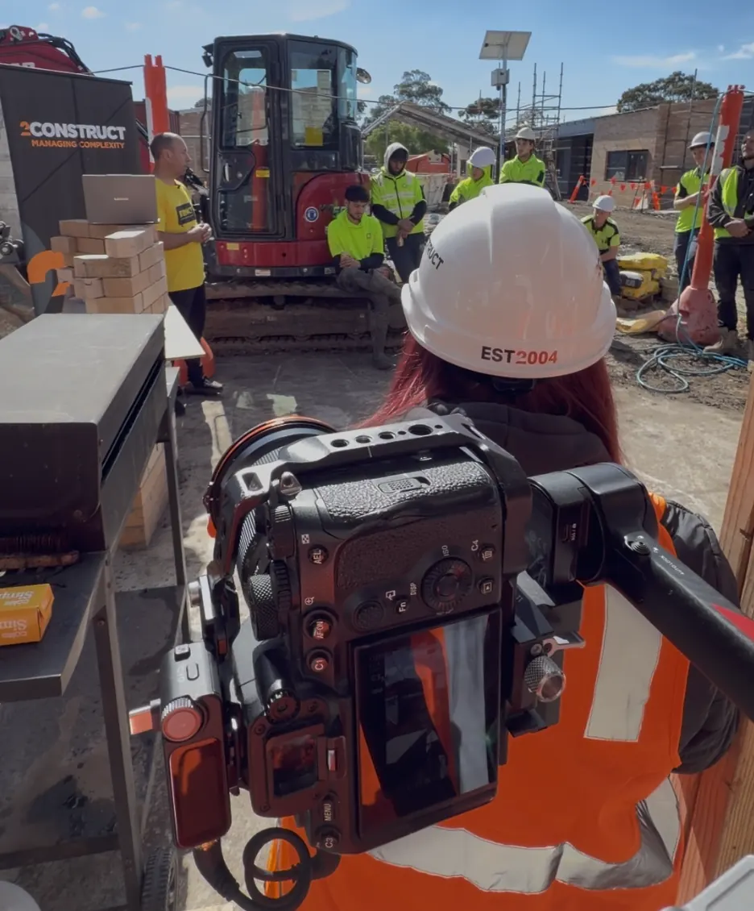

Services
Built for the build
A story-focused offer for builders. We produce authentic films that connect with the people who hire you, without the struggle of content that does not sound like the business. Australia only. On your projects. No studio filming. No spokesperson.
The films that carry trust are the ones where a homeowner or a developer says why they chose you. Scripts are written in the speaker’s voice. The public cut on this site is the ONQ Building Group client testimonial.
Walkthroughs show the work instead of describing it. On this site: a luxury bathroom walkthrough, a before-reno client walkthrough, a bathroom highlight, and an iBrick Construction walkthrough.
Long-form is for the story that does not fit a short cut. The current site has a long-form section. Those films are not on a public link yet, so this site does not pretend to play them.
Scheduling, captions and publishing, done for you. The content goes up on your channels so you are not the one managing the page.
Content sessions cover the brand story and a batch of social films in the one visit. We come to the project. There is no studio filming and no spokesperson standing in for you or your team.

On the site, not in a studio
Shot planning, scripts in your voice, and a session that covers the brand story and a batch of content while the project is live. The film should feel as considered as the build.
- Stop just quoting jobs. Start commanding attention.
- To a homeowner, you are one quote until the work is visible.
- Don’t tell people you’re the best. Show the process, the pride and the people.
Discovery call
Still not sure where to start?
Bring the projects on the go, the handover coming up, and the enquiries you want next. The call is how we work out whether the system fits.